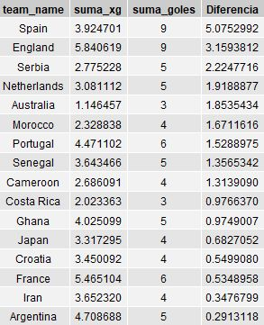
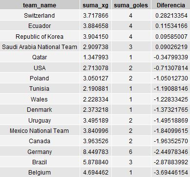

El gol esperado ó Xg es una métrica que nos indica que tan probable que un remate sea gol de acuerdo con sus características, como por ejemplo su potencia, distancia a la arquería, lugar del remate, posición del arquero, entre otros.
Es posible utilizar esta métrica para calcular la siguiente diferencia,
Diferencia = Goles - Goles esperados
con ella podemos ver qué tan efectivo es un equipo en cuanto a las ocasiones creadas.
Gracias a la colaboración de Sports Data Campus y BEPRO fue posible contar con esta información para la fase de grupos del mundial Qatar 2022 ⚽ . Usando esta valiosa información se realizó un análisis que se resume en cuatro imágenes,
- 📊 Diferencia entre goles y goles esperados,
💡 Valores positivos indican que los equipos consiguieron más goles de lo esperado.
💡 Valores negativos indican que según sus ocasiones y remates el equipo anotó menos goles de lo esperado.
De esta manera se puede afirmar que España e Inglaterra son dos selecciones que marcaron mucho más goles de lo esperado. Por su parte Bélgica y Brasil son dos selecciones que según sus ocasiones marcaron menos de lo esperado.
- 📊 Gráfico de dispersión : es una representación alternativa del gráfico anterior, en el mismo se puede observar la cantidad de goles y goles esperados de cada equipo.
3 y 4. Data usada en los gráficos, en dichas tablas se observan los valores exactos de cada equipo.
 